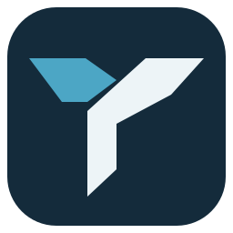

TernwayVersion 0.2.0 · Minor release Your machines. One workspace.A desktop workspace for local shells and remote machines. Keep SSH connections organized, work with files, and move between terminals and server tools on macOS and Linux. Created byMohamed ElashriLicenseMITBuilt withRust, Tauri and xterm.jsPlatformsmacOS and Linux Source codeReport an issueRelease notesLicense